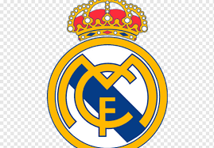

레알마드리드
스페인 라리가의 프로 축구 클럽. 연고지는 마드리드. 홈구장은 에스타디오 산티아고 베르나베우.
UEFA 챔피언스 리그, 라리가, FIFA 클럽 월드컵 최다 우승을 자랑하는 구단으로, 라리가가 1928년 창설된 이후로 단 한 번도 강등당하지 않고 1부 리그에 잔류하고 있다.
20세기부터 스페인과 유럽에서 가장 성공적인 클럽으로, 자국 라이벌 FC 바르셀로나와 함께 라리가를 양분하고 있고,
범위를 유럽 전역으로 넓혀도 가장 거대한 축구 클럽으로 첫 손에 꼽힌다.
